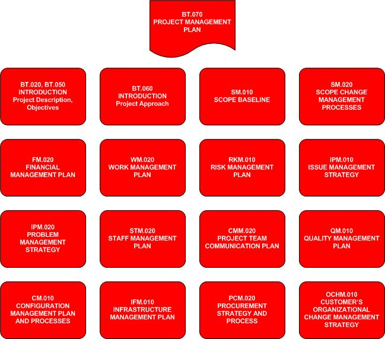

OUM |
Task Overview |
||
Method Navigation |
Current Page Navigation |
||
|
|
||||||||
The purpose of this task is to create the Project Management Plan (PMP). The purpose of the PMP is to document the project governance. The building of the Project Management Plan is an interactive, collaborative exercise with the customer. Once completed, the Project Management Plan will remain relatively fixed and only require updates if there are material changes to the governance.
The Project Management Plan is developed iteratively during Project Start Up. In the first iteration, the initial PMP is created. At this point in time, some content is already available as a result of Bid Transition tasks and conversations with the customer regarding the contract and project approach. Remaining sections are completed as their corresponding tasks are executed during Project Start Up and in particular during the Establish Governance activity. After all the tasks that contribute to its development have been executed, the PMP is finalized. The following image shows how the various tasks in Project Start Up contribute to the PMP:

PS.ACT.RPAC Review Project Assets with Customer
PS.ACT.EG Establish Governance
Project Management Plan
The Project Management Plan (PMP) is perhaps the single most important work product produced by the project manager. It documents the agreed approach to project governance and sets stakeholder expectations by formally communicating as precisely as possible, how the project will be executed, monitored and controlled. Each section of the PMP is completed to the detail appropriate for the given project and in accordance with your organization’s policies or standards.
You should follow these steps:
No. |
Task Step | Component | Component Description |
|---|---|---|---|
1 |
Create the initial Project Management Plan. | Initial Project Management Plan | The Initial Project Management Plan is saved in the Project Library and ready to be updated with the governance for the project. |
2 |
As you execute various Project Start Up tasks and collaborate with the customer, update the appropriate sections of the PMP. | Updated Project Management Plan | The Updated Project Management Plan is updated iteratively by each task that contributes to the PMP. |
| 3 | Finalize the PMP. | Project Management Plan | The final Project Management Plan has been updated with the appropriate governance for all areas and has been internally reviewed for consistency in both format and across all sections. |
| 4 | Formally review the PMP with the customer. | Project Management Plan | The Project Management Plan has been reviewed with the customer and any revisions from that review have been applied. |
| 5 | Secure acceptance of or agreement with the PMP from the customer. | Acceptance Certificate (SM.040) Delivery Note (SM.040) |
The Acceptance Certificate (SM.040) or Delivery Note (SM.040) (or another acceptable document) provides evidence of the acceptance, agreement or acknowledgment by the customer or serves as evidence of notification to the customer. Secure and document acceptance or agreement by the customer in accordance with your organization’s policies or standard operating procedures. |
For the first iteration of this task, create the initial Project Management Plan. Decide what format you want to use for the PMP. OUM provides a Word template and a PowerPoint template as well as an abbreviated PowerPoint template. Save the initial PMP in your Project Library.
Update the front matter, properties and variables.
Update any other sections with material from tasks that have already been completed (BT.020, BT.050, and BT.060) and output from initial conversations with the customer.
During Project Start Up, as you partner with the customer to accomplish each task that builds the PMP, update the appropriate section(s).
The second formal iteration of this task happens at the end of the Establish Governance activity. Before formally reviewing the PMP with the customer, internally review the PMP to ensure that what is communicated is consistent with the contract, your organization's policies and standard operating procedures and project approach.
Don't forget to check the PMP for the following:
First, confirm that the purpose of the PMP is understood by the project sponsor and key project stakeholders.
Next, conduct formal customer review(s) of the PMP with the identified stakeholders as soon as possible after completion and gain agreement. The goal of the review(s) is to ensure that key project stakeholders are informed of and understand how you will manage the project and what support structure will be in place to enable the project team to accomplish the objectives. It is also an opportunity to reinforce agreements made to date regarding governance and roles and responsibilities.
A final review of the PMP should be conducted to present the document or presentation in its entirety and affirm agreement once more among the key stakeholders. The PMP should be used during the Project Kickoff and any other subsequent onboarding activities to communicate and gain commitment on the manner in which the project will be governed.
Secure and document acceptance of or agreement with the PMP by the customer in accordance with your organization’s policies or standard operating procedures.
Once agreed, the PMP should be used during the Project Kickoff and any other subsequent onboarding activities to communicate and gain commitment on the manner in which the project will be governed.
This task involves the following method roles:
Role |
Responsibility |
% |
|---|---|---|
Project Administrator |
Assist the project manager in the day-to-day management of the project by performing routine or repetitive activities, tasks or task steps. If your project does not have a dedicated project administrator, the project manager would perform these duties. | 25 |
Project Manager |
Collaboratively, facilitate the development of the Project Management Plan. Review the PMP with the customer and secure and document acceptance or agreement. | 75 |
You need the following for this task:
Prerequisite |
Usage |
|---|---|
Project Bid Materials Contract |
|
Review and Confirm Business Case (BT.020) Review Contract with Customer (BT.050) Review Project Approach with Customer (BT.060) |
Use these tasks to complete the appropriate sections in the introduction of the PMP. |
Define and Confirm Scope (SM.010) |
Use this task to update the Scope Baseline of the PMP. If your task is covered by a Contract, it may be acceptable and even preferable to just reference the contract for this section of the PMP. |
Develop Scope Change Management Processes (SM.020) |
Use this task to update the Scope Change Management Processes of the PMP. |
Develop Financial Management Plan (FM.020) |
Use this task to update the Financial Management Plan of the PMP. |
Develop Work Management Execution and Control Processes and Policies (WM.020) |
Use this task to update the Work Management Plan of the PMP. |
Develop Risk Management Plan (RKM.010) |
Use this task to update the Risk Management Plan of the PMP. |
Develop Issue Management Strategy (IPM.010) |
Use this task to update the Issue Management Strategy of the PMP. |
Develop Problem Management Strategy (IPM.020) |
Use this task to update the Problem Management Strategy of the PMP. |
Develop Staff Management Plan (STM.020) |
Use this task to update the Staff Management Plan of the PMP. |
Develop Project Team Communication Plan (CMM.020) |
Use this task to update the Project Team Communication Plan of the PMP. |
Develop Quality Management Plan (QM.010) |
Use this task to update the Quality Management Plan of the PMP. |
Develop Configuration Management Strategy and Processes (CM.010) |
Use this task to update the Configuration Management Plan and Processes of the PMP. |
Develop Infrastructure Management Plan (IFM.010) |
Use this task to update the Infrastructure Management Plan of the PMP. |
Develop Procurement Strategy and Process (PCM.010) |
Use this task to update the Procurement Strategy and Process of the PMP. |
Understand Customer's Organizational Change Management Strategy (OCHM.010) |
Use this task to update the Customer's Organizational Change Management Strategy of the PMP. |
The following templates and tools are available to assist with this task:
Template File Name |
Comments |
|---|---|
| MS WORD - Use this template to create your Project Management Plan. | |
| MS POWERPOINT - Use this template to create your Project Management Plan.This template provides an alternative presentation version of the PMP. | |
| MS POWERPOINT - This template provides an alternative abbreviated presentation version PMP. | |
| MS POWERPOINT - Use this resource to update the various Flow Diagrams in the PMP. | |
| MS VISIO - Use this resource to update the various Flow Diagrams in the PMP. |

Copyright © 2006, 2016, Oracle and/or its affiliates. All rights reserved.